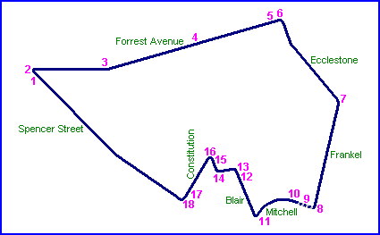
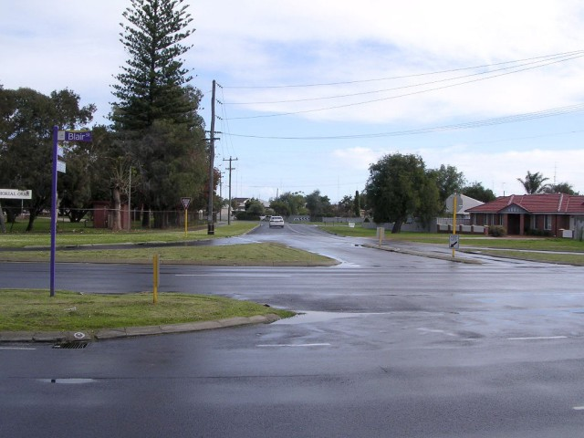
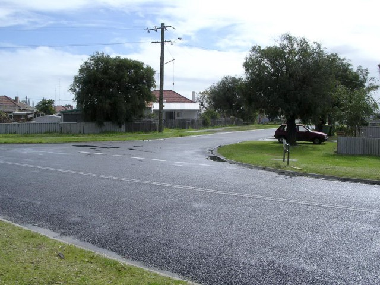
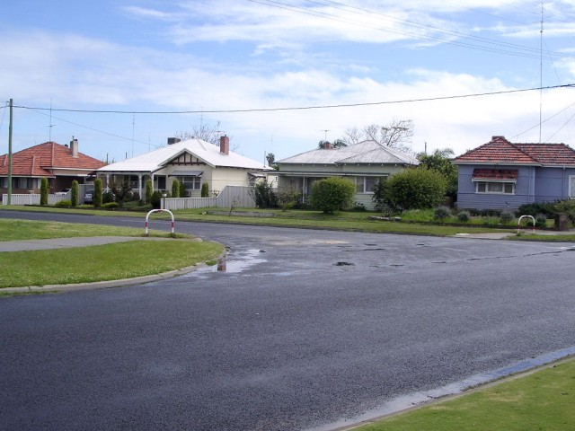
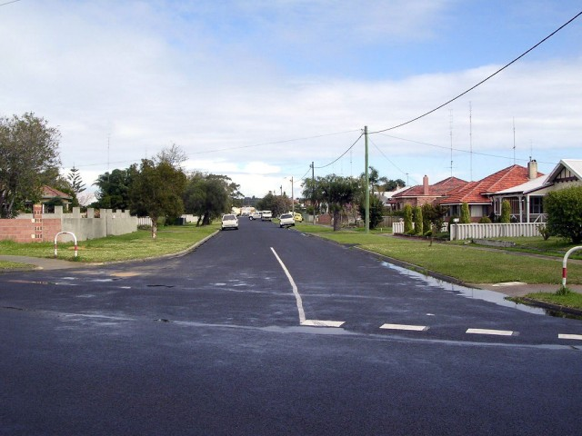
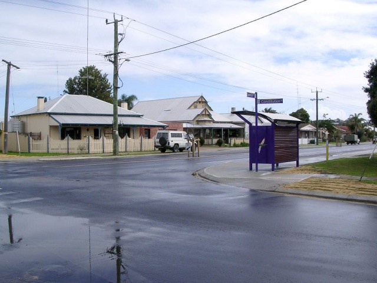
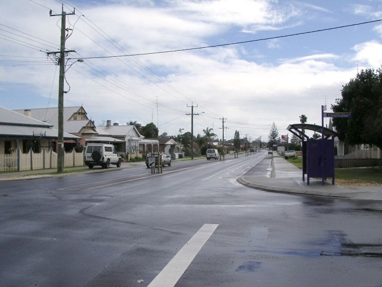

Carey Park - Clarke Street via Mary Street to Constitution Road
|| Contents || Spencer - Eccelstone | Frankel - Blair | Clarke - Constitution || Home ||

Numbers on the map represent the location where the photographs were taken. Scroll
down to view the photographs.
Return to racingcircuits.net's Photo Archive Main Index

13 - Clarke Street.

14 - Right turn into Mary Street.

15 - Left turn into Constitution Road.

16 - Constitution Road.

17 - Right turn into Spencer Street.

18 - Spencer Street.
Photographs and Text ©Neil Fackerell. Reproduced here with kind permission.